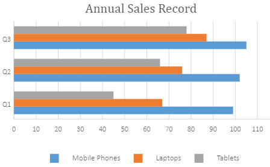
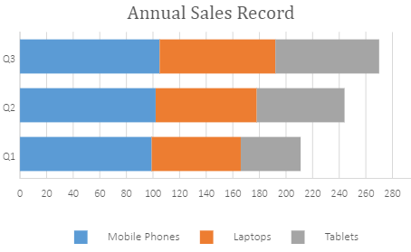
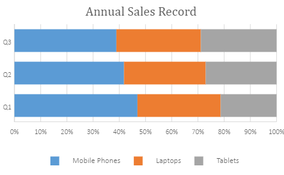
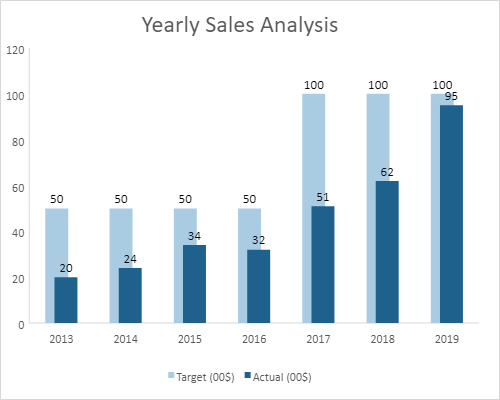

A bar chart is extensively used to illustrate comparisons between individual items or categories.
The data arranged in columns or rows of a worksheet can be plotted in a bar chart. In bar charts, the categories are organized along the vertical axis with the data values along the horizontal axis.
SpreadJS supports the following types of bar charts. In the examples shown below, the annual sales record for Quarter 1, Quarter 2 and Quarter 3 for different categories of gadgets: Mobile Phones, Laptops and Tablets is depicted in different types of bar charts.
A clustered bar chart displays the comparisons of values across different categories.
An image of a clustered bar chart is shown below:

A stacked bar chart displays the relationship of each item/category to the whole in two-dimensional and three-dimensional rectangles.
An image of a stacked bar chart is shown below:

A 100% stacked bar chart displays the comparisons of percentage that each of the values contribute to the total across different categories.
An image of a 100% stacked bar chart is shown below:

This code shows how to add different types of bar charts in a spreadsheet.
| JavaScript |
Copy Code
|
|---|---|
var chart_barClustered, chart_barStacked, chart_barStacked100, sheet; window.onload = function () { var spread = new GC.Spread.Sheets.Workbook(document.getElementById("ss")); sheet = spread.getActiveSheet(); sheet.suspendPaint(); //prepare data for chart sheet.setValue(0, 1, "Q1"); sheet.setValue(0, 2, "Q2"); sheet.setValue(0, 3, "Q3"); sheet.setValue(1, 0, "Mobile Phones"); sheet.setValue(2, 0, "Laptops"); sheet.setValue(3, 0, "Tablets"); for (var r = 1; r <= 3; r++) { for (var c = 1; c <= 3; c++) { sheet.setValue(r, c, parseInt(Math.random() * 100)); } } //add barClustered chart chart_barClustered = sheet.charts.add('chart_barClustered', GC.Spread.Sheets.Charts.ChartType.barClustered, 250, 20, 600, 400, "A1:D4"); //add barStacked chart chart_barStacked = sheet.charts.add('chart_barStacked', GC.Spread.Sheets.Charts.ChartType.barStacked, 250, 480, 600, 400, "A1:D4"); //add barStacked100 chart chart_barStacked100 = sheet.charts.add('chart_barStacked100', GC.Spread.Sheets.Charts.ChartType.barStacked100, 250, 900, 600, 400, "A1:D4"); sheet.resumePaint(); }; |
|
In Bar chart, you can set the gap width between the series by using the gapWidth property. The value of gapWidth property can be set between 0 and 5 and the default value is 1.
Also, you can set the value for overlapping of series by using the overlap property. The value of this property must be between -1 and 1. If the value is set to -1, bars are positioned in such a way that there is a gap of one bar between them. If the value is set to 1, bars are positioned on top of each other.
The following image displays an example of gap width and overlapping of series in the chart.

In order to set the gap width of the bar chart along with overlap, refer to the following example code.
| JavaScript |
Copy Code
|
|---|---|
// Initializing Spread var spread = new GC.Spread.Sheets.Workbook(document.getElementById('ss'), { sheetCount: 1 }); // Get the activesheet var activeSheet = spread.getSheet(0); // Prepare data for chart var dataArray = [ ['Year', 'Actual (00$)', 'Blank', 'Target (00$)'], ['2013', 20, 0, 50], ['2014', 24, 0, 50], ['2015', 34, 0, 50], ['2016', 32, 0, 50], ['2017', 51, 0, 100], ['2018', 62, 0, 100], ['2019', 95, 0, 100] ]; // Set data for chart activeSheet.setArray(0, 0, dataArray); // Set column widths and visibility activeSheet.setColumnWidth(1, 90); activeSheet.setColumnWidth(3, 90); activeSheet.setColumnVisible(2, false, GC.Spread.Sheets.SheetArea.viewport); // Add bar chart chart_bar = activeSheet.charts.add('chart_bar', GC.Spread.Sheets.Charts.ChartType.bar, 270, 20, 500, 400); // Add series to bar chart var series = chart_bar.series(); series.add({ chartType: GC.Spread.Sheets.Charts.ChartType.bar, axisGroup: GC.Spread.Sheets.Charts.AxisGroup.primary, name: "Sheet1!$D$1", xValues: "Sheet1!$A$2:$A$8", yValues: "Sheet1!$D$2:$D$8", }); series.add({ chartType: GC.Spread.Sheets.Charts.ChartType.bar, axisGroup: GC.Spread.Sheets.Charts.AxisGroup.primary, name: "Sheet1!$B$1", xValues: "Sheet1!$A$2:$A$8", yValues: "Sheet1!$B$2:$B$8" }); series.add({ chartType: GC.Spread.Sheets.Charts.ChartType.bar, axisGroup: GC.Spread.Sheets.Charts.AxisGroup.secondary, name: "Sheet1!$C$1", xValues: "Sheet1!$A$2:$A$8", yValues: "Sheet1!$C$2:$C$8" }); // Hide gridlines from the chart var gridLinesAxes = chart_bar.axes(); gridLinesAxes.primaryCategory.majorGridLine.visible = false; gridLinesAxes.primaryValue.majorGridLine.visible = false; chart_bar.axes(gridLinesAxes); // Get title and set it's text var title = chart_bar.title(); title.fontSize = "24.00"; title.text = "Yearly Sales Analysis"; chart_bar.title(title); // Set series(0) backColor var seriesItem = chart_bar.series().get(0); seriesItem.backColor = "#A9CCE3"; chart_bar.series().set(0, seriesItem); // Set series(1) backColor var seriesItem = chart_bar.series().get(1); seriesItem.backColor = "#1F618D"; // Set series's GapWidth seriesItem.gapWidth = 2; // Set series's overlap seriesItem.overlap = 0.6; chart_bar.series().set(1, seriesItem); // Set chart's dataLabels chart_bar.dataLabels ({ showValue: true, color: "black" }); |
|